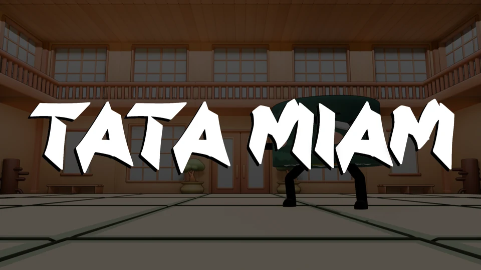
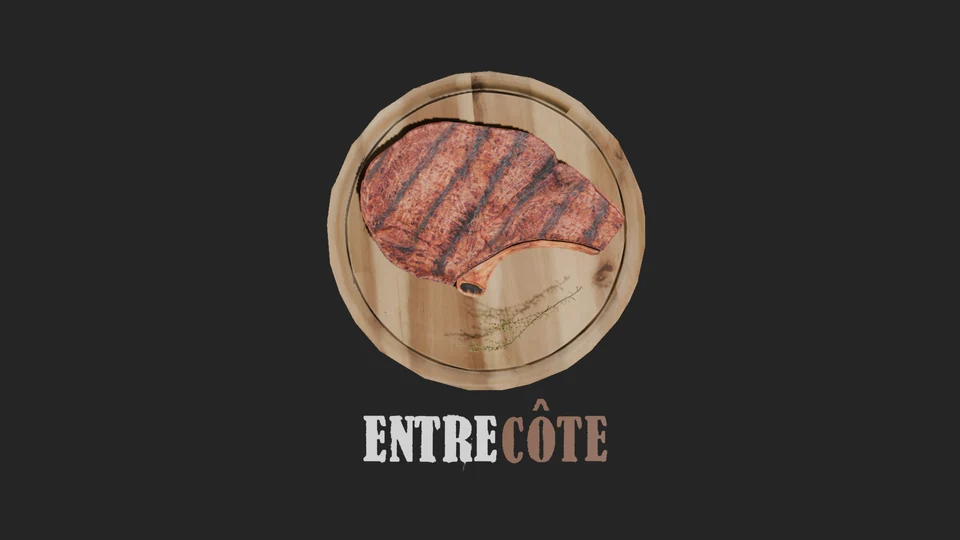
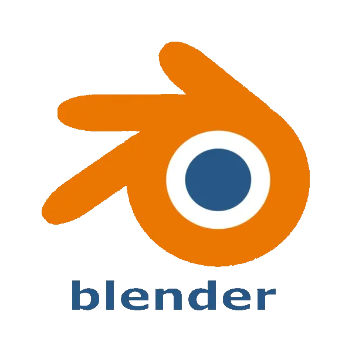
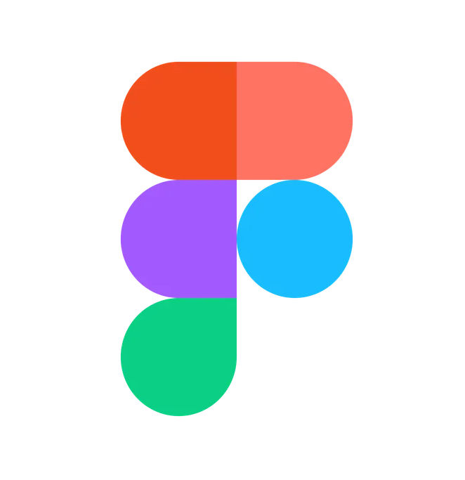

Tout suit le mouvement
Le contour se tasse, s’allonge et s’arrondit pendant le petit saut. Le texte et les icônes suivent ; la zone de clic et le focus restent stables.
La référence du portfolio
Des formes souples, un peu de volume et des réactions élastiques. La palette de ton portfolio reste le point de départ.
Survole les composants et maintiens un bouton enfoncé pour sentir la compression. Le texte et les icônes suivent la déformation du fond.
Mouvement réduit du système respecté.
Le même caractère, avec une priorité claire entre les actions.
Deux styles : rose plein sans ombre et contour rose sur fond transparent. Le lien Code source utilise le logo GitHub ; une ressource indisponible reste désactivée. En 700 ms, un mouvement léger de 0,5 px avec une déformation limitée à 4 % en largeur et 7 % en hauteur. Le texte et l’icône suivent, puis tout retrouve sa forme normale.
Lire les règles du systèmeLes mêmes symboles dans le menu, les actions et les liens de contact.
Icônes de 24 px, teintées avec la couleur du composant. Les profils gardent une cible de 44 px et un nom accessible ; les logiciels affichent leur nom à côté du logo.
Les surfaces ont du volume. Les visuels et les informations gardent leur place.
Aucun projet dans cette catégorie. Choisis « Tous ».

Un jeu de cuisine en ligne où vous incarnez un sushi et gérez un restaurant-dojo avec vos amis.
Aperçu de la carte
Un moteur 3D avec un rendu DirectX 12 et une architecture à entités et composants.
Aperçu de la carteCes deux descriptions proviennent de la collection actuelle. Les cartes ouvrent un aperçu dans cette galerie.
Une réaction plus discrète pour les composants que l’on utilise souvent.
Le globe commence à s’étirer pendant la fin de l’ouverture, prolonge son élan, puis reste suspendu avant son retour. Les panneaux se déploient jusqu’à leur taille finale. Le mouvement conserve les valeurs validées : 300 ms d’ouverture et une inertie du globe de 665 ms au total.

Blender
FigmaLogo et nom partagent la même ligne. Les logiciels restent lisibles sans survol ; seules les précisions supplémentaires apparaissent dans une infobulle.
Des cadres adoucis et des commandes cohérentes avec le reste de l’interface.
L’aperçu montre le lecteur avec une image fixe, sans croix, contour ni ombre. Échap et le clic extérieur ferment le lecteur et rendent le focus au bouton d’ouverture.
Un langage commun, avec une animation adaptée à chaque composant.
Le contour se tasse, s’allonge et s’arrondit pendant le petit saut. Le texte et les icônes suivent ; la zone de clic et le focus restent stables.
Les commandes retrouvent leur taille normale même si le pointeur reste dessus. Tous les points partagent le même rebond, y compris le point courant.
Une action rose pleine et une alternative à contour rose sur fond transparent. Le rebond est commun ; couleurs et contour indiquent le survol après sa fin.
Les animations utilisent les valeurs validées. La préférence système de mouvement réduit supprime les mouvements tout en gardant les couleurs, les actions et le focus. Repère W3C (nouvel onglet)
Règles, palette et typographie · Gabarits des pages · Ouvrir le portfolio